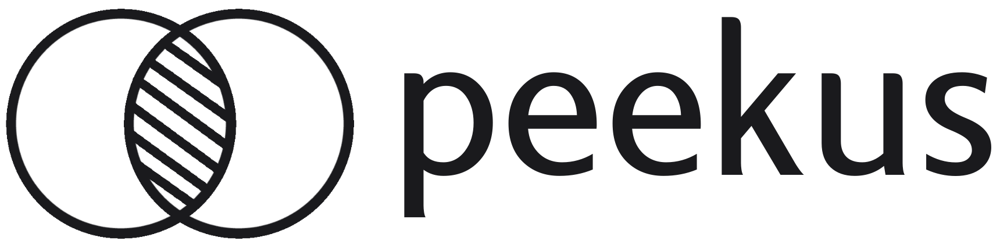

<ion-toolbar color="secondary">
    <div class="d-flex-inbetween">
        <div style="display: flex; align-items: center;">
            
        </div>
        <div style="display: flex; align-items: center;">
            <ion-button fill="clear" class="ion-no-padding mr-2">
                <ion-icon name="notifications" color="tertiary" size="large"></ion-icon>
            </ion-button>
            <ion-button fill="clear" size="large" class="ion-no-padding" (click)="logout()">
                <app-profile-picture *ngIf="loadedPic" [profilePictureId]="userProfilePicSrc" [size]="45" class="mr-2"></app-profile-picture>
            </ion-button>
        </div>
    </div>
</ion-toolbar>